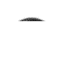

- camera -
|
Offering both wired and wireless CCTV home or business security camera surveillance equipment packages. . 123 CCTV Security Camera Surveillance Equipment CCTV - Security camera surveillance equipment. Complete security camera systems or cameras sold individually. Selling both wired and wireless CCTV home or business security camera surveillance equipment packages. |
One of the best camera sites Site covers Classic Nikon Rangefinder and Nikon F Cameras . . Antique and Classic Camera Web Site for Camera Collectors. Enjoy the ride and bear in mind that each camera on my site is in original condition - none of them have been repaired or restored in any way. If you have a wood camera that is for sale send me an email by clicking here.
|  |
. Some projections suggest that digital cameras will become as popular as film-based cameras by 2005. In this edition of HowStuffWorks, you will learn how a digital camera converts light into an image that can be stored on a computer or printed out on a desktop printer. You may want to start with "How It Works" to learn the basics of how a digital camera works -- it's an amazing system. If you've never used a digital camera before, check out "What It Can Do. |
|
com JUST SOME OF THE THINGS YOU'LL LEARN ABOUT IN THIS COMPREHENSIVE ON-LINE GUIDE 3D - anaglyphs - Ansel Adams - AVI - batteries - battery chargers - bit depth - bitmaps - BMPs - camera books - camera guides - buying guide - camera backs - cameras - Canon PowerShot - CCDs - CD - CD-R - CD-RW - Choosing a digital camera - Click. . Click to Visit Bookstore Short Courses Digital Camera Bookstore Check out our BOOKS on popular digital cameras from Nikon, Olympus, Canon, and Epson. A Short Course in Choosing a Digital Camera Everything you need to know if you're buying a digital camera. Editor's Choices The Best Digital Cameras There are lots of digital cameras (and accessories), but these are the ones people are talking about. |
A good camera site: http://www.mediaeater.com/cameras/